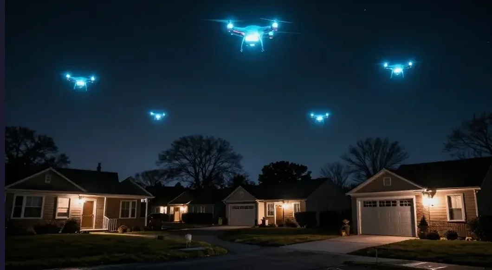

New Jersey Drones: The Mystery in the Sky

In mid-November 2024, people in New Jersey began looking up at the night sky. What they saw frightened them. Large, unknown flying machines were moving over their homes. Witnesses said they were drones far bigger than anything people can buy in a shop. A drone is a small aircraft with no pilot on board.
The machines appeared over neighborhoods, military bases, and important public works. They moved in eerie silence through the dark. They carried bright lights, white, red, and green. The lights seemed to hover and shift with unnatural precision.
The reports started in Morris County. On November 13, 2024, an unauthorized drone was confirmed over Picatinny Arsenal, a U.S. Army research base. Within days, sightings had spread to Somerset County, Hunterdon County, and along the Raritan River. By early December, people in more than 20 New Jersey counties were reporting sightings. Similar reports were coming in from New York, Connecticut, Pennsylvania, and Maryland.
Thousands of witnesses described machines with wingspans of an estimated six to eight feet. That is far larger than any drone sold in stores. They said the machines could hover for hours. Ordinary consumer drones have a battery that lasts only 20 to 45 minutes.
Some witnesses said drones flew in formation. Others said they followed Coast Guard boats or appeared near Naval Weapons Station Earle and Trump National Golf Club in Bedminster.
The FBI, the Department of Homeland Security, and the FAA began investigations. The FAA is the Federal Aviation Administration, which controls the skies over the United States. Elected officials, from town mayors to the President-elect, demanded answers. By November 2025, despite official reassurances, dozens of sightings were still unresolved.
The story begins on November 13, 2024. That day a first confirmed unauthorized drone was detected in restricted airspace above Picatinny Arsenal. This is the U.S. Army’s main center for developing weapons and explosives. It is in Rockaway Township, Morris County.
The base works on some of the military’s most secret weapons technology. It is surrounded by restricted airspace, where unauthorized flying machines are forbidden. Law enforcement officers at the base confirmed the first sighting. Over the next weeks, ten more confirmed incursions happened over the base, through December 6, 2024. A Picatinny spokesperson later said that the suspected drones were not part of any military activity at the base. They were not approved to fly over it.
At the same time, civilians in Morris County began to report strange lights in the sky. These were not the familiar blinking lights of airliners on set flight paths. They were bright, steady lights that seemed to hover and drift slowly. Sometimes they sped up in ways that unsettled witnesses.
The descriptions were remarkably alike. People described large objects, much bigger than the consumer drones in electronics stores. They estimated wingspans of six to eight feet, and said the objects were almost silent. The lights were white, red, and green. Sometimes they were arranged in patterns that suggested one solid craft rather than one light.
Many witnesses said the objects flew at heights from several hundred to several thousand feet. Some said the craft could hover in one place for a long time. That is far more than the 20 to 45 minutes a typical consumer drone can fly on one battery charge.
The number of reports was staggering. More than 3,000 sightings were reported to federal, state, and local agencies across the northeastern United States. Reports came from over 20 New Jersey counties and at least four other states.
The Morris County Prosecutor’s Office set up a special tip line for drone sightings. The FAA put temporary flight limits over parts of New Jersey. Unauthorized drones were confirmed over at least two military sites: Picatinny Arsenal and Naval Weapons Station Earle. Sightings were also reported near Trump National Golf Club in Bedminster and along important public works.
Federal investigators looked at the thousands of reports. They decided that the great majority were authorized drones, airliners, helicopters, or objects in space. But a significant number stayed unexplained.
As reports multiplied, the federal government’s response showed both caution and public frustration. On December 12, 2024, John Kirby, a spokesperson for the White House National Security Council, spoke at a press briefing. He said that many of the reported objects were actually aircraft with pilots, flying legally. These were airliners, helicopters, and other approved flights that people had mistaken for drones.
The FBI, the Department of Homeland Security, the Department of Defense, and the FAA issued a joint statement. They said they had “not identified anything anomalous.” They said there was no evidence of crime or threats to national security. The statement was meant to calm the public. Instead it had the opposite effect.
The problem was that the official reassurances did not match what people saw with their own eyes. Governor Phil Murphy of New Jersey held briefings and called publicly for a federal investigation. He said his office had received hundreds of reports from worried citizens.
Senator Andy Kim of New Jersey took an unusual step. He joined local police on a real drone-hunting patrol. He said he personally saw several unidentified craft in the sky. President-elect Donald Trump spoke about the sightings. He called for the government to be open about what it knew. He also suggested that the military should shoot the drones down.
All this politics added fuel to the public guessing. Then came the most explosive claim of all. Representative Jeff Van Drew of New Jersey went on national television. He said the drones were coming from an Iranian “mothership” off the East Coast. The claim was dramatic and alarming. According to the Pentagon, it was completely false. On December 17, 2024, the Pentagon said clearly that no Iranian ship was involved in the sightings. But the denial did not fully erase the fear that Van Drew’s claim had stirred up.
The FAA put temporary flight limits over parts of New Jersey because of the sightings. This step is usually kept for national security events or emergencies. The FAA ran its own investigation. It found no evidence of unauthorized drone flights that matched the size and descriptions given by witnesses.
The Department of Defense confirmed that the U.S. military was not flying drones in the areas where sightings were reported. Counter-drone technology was set up at Picatinny Arsenal and other sensitive places. It can detect and track unauthorized flying machines, and if needed, stop them. Even so, sightings were still reported all through December. The gap between what officials said and what witnesses described never fully closed.
As federal investigators studied the reports, a mixed picture came out. The joint investigation sorted the reports into several groups. Some were legal drones flown by hobbyists, businesses, and government agencies. Some were aircraft with pilots, such as airliners, medical helicopters, police helicopters, and military aircraft. Some were objects in space, such as stars and planets. And one small group were truly unidentified objects that could not be named from the evidence available.
Aviation experts pointed out something. The constellation Orion was especially bright in the sky in November and December 2024. Its pattern of stars includes the brilliant Betelgeuse and Rigel. People who do not know the night sky could easily mistake these for the lights of a hovering aircraft.
Many sightings happened near the flight paths of airports. There, low-flying planes with their landing lights on could seem to hover or move slowly. And an FAA rule change in 2023 let drones fly at night. So there really were more drones in the sky than in earlier years.
But these explanations, though likely for many single sightings, could not account for all of them. Witnesses included experienced pilots, police officers, and military personnel. These people are trained to identify aircraft. They said what they saw did not match any ordinary explanation.
Several details from the 2024 drone wave are hard to explain. The unauthorized drones over Picatinny Arsenal were confirmed by military law enforcement. This showed that at least some unidentified flying machines were really operating over a sensitive military research base. The incursions happened again and again over nearly a month. That suggests a level of skill and persistence that does not fit hobbyist drone flyers. And the craft with six-to-eight-foot wingspans that could hover for long periods were beyond what most drones on sale at the time could do.
Perhaps the most intriguing detail came in November 2025, in a report marking one year since the sightings. The mayor of Montvale, New Jersey, Mike Ghassali, passed on an account from a local drone hobbyist he trusted. The hobbyist said that one of the large mystery drones took control of his own drone while both were in the air. If true, this would point to technology far beyond anything the public can buy.
The hobbyist refused to come forward in public. He feared harm to his career. The report also noted that dozens of sightings were still unresolved a year after the first wave. This went against the official story that the whole thing had been explained.
A key feature of the 2024 New Jersey drone mystery was the role of social media. It made the whole thing bigger and also twisted it. Facebook groups and Reddit threads about the sightings gained thousands of members within days. People posted blurry night photos, shaky videos of far-off lights, and more and more far-fetched theories about where the drones came from and what they were for.
The posts spread so fast that every new sighting, real or not, reached an audience of millions. This created a loop. The attention caused by the reports led to more reports, which led to more attention.
Psychologists noted signs of a mass psychogenic event. This is when heightened awareness and worry lead many people to read ordinary sights as proof of something mysterious. But it would be too simple to call all the reports mass hysteria. The confirmed military incursions, the consistent witness descriptions, and the sightings that lasted many weeks suggest something real was in the sky. This is true even if most reports had ordinary explanations.
This was not the first time that large numbers of people reported strange objects in the sky. It will not be the last. In 1946, thousands of witnesses across Scandinavia reported “ghost rockets.” These were rocket-like objects that streaked across the sky after World War II. They led to official investigations by the Swedish, Norwegian, and U.S. governments.
In 1952, a series of reports of unidentified flying objects over Washington, D.C., included radar signals at two separate airports. They set off a major Air Force investigation. In 2019 and 2020, residents of Colorado and Nebraska reported large drones flying in grid patterns at night over farm areas. That event was never fully explained.
In 1997, the Phoenix Lights incident took place. Thousands of Arizona residents saw a huge V-shaped formation of lights over Phoenix. The military said they were flares. Many witnesses reject that explanation.
The New Jersey drone sightings fit a familiar pattern. First comes a believable early report. Then the media spreads it, and social media spreads it like wildfire. A flood of new reports follows, and many are mistakes. And a small group of truly unexplained sightings keeps the mystery alive.
The 2024 New Jersey drone mystery is one of the biggest mass sighting events in American history. It mixed real national security worries, the spread of fear from person to person, media attention, and a few truly unexplained sightings. Together they made a perfect storm of public anxiety.
The official investigation concluded that most sightings were authorized drones, airliners, helicopters, and objects in space. It found no evidence of a national security threat. But some things keep the mystery alive. Unauthorized drones were confirmed over Picatinny Arsenal. Some sightings were still unresolved a year later. And experienced witnesses insist that what they saw was not an ordinary aircraft.
The New Jersey drone wave showed that today, with cameras everywhere, social media, and advanced drone technology, the line between the explained and the unexplained is blurrier than ever. Watching the skies can still turn up surprises that nobody in authority is ready to explain. What exactly were those lights? We still do not know.
References & Further Reading
📚 Recommended Reading: UFOs: Generals, Pilots, and Government Officials Go on the Record by Leslie Kean (on Amazon) — As an Amazon Associate, we earn from qualifying purchases.
Editorial note: the 2024 New Jersey drone sightings are documented through official government statements, congressional testimony, military records, and thousands of witness reports. See our Editorial Policy.